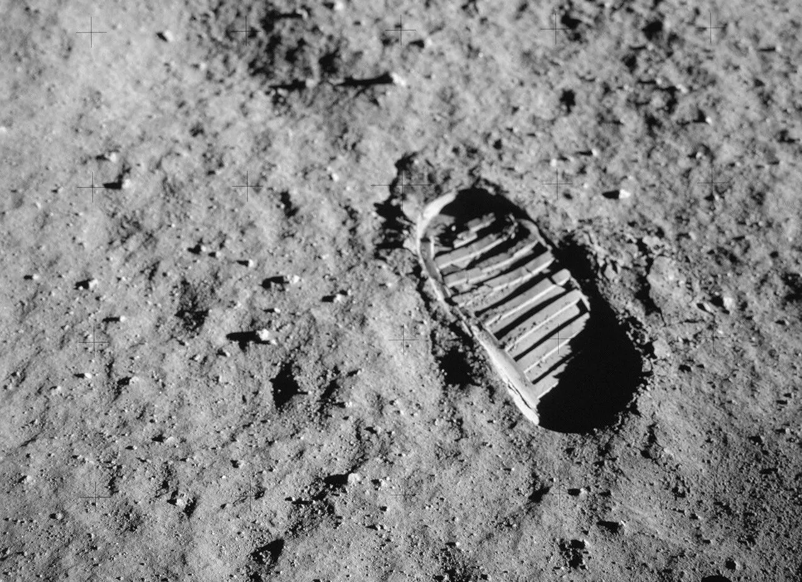
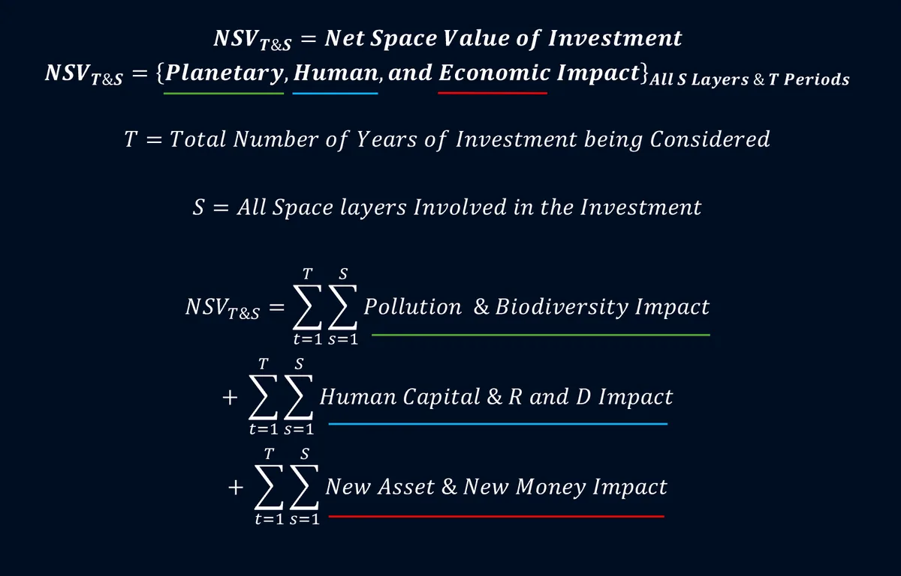
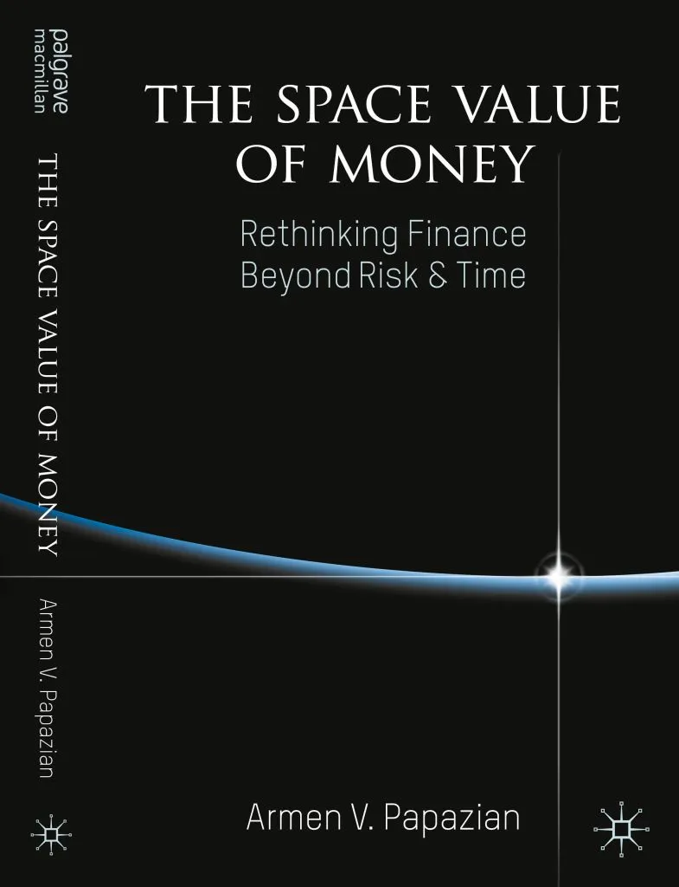
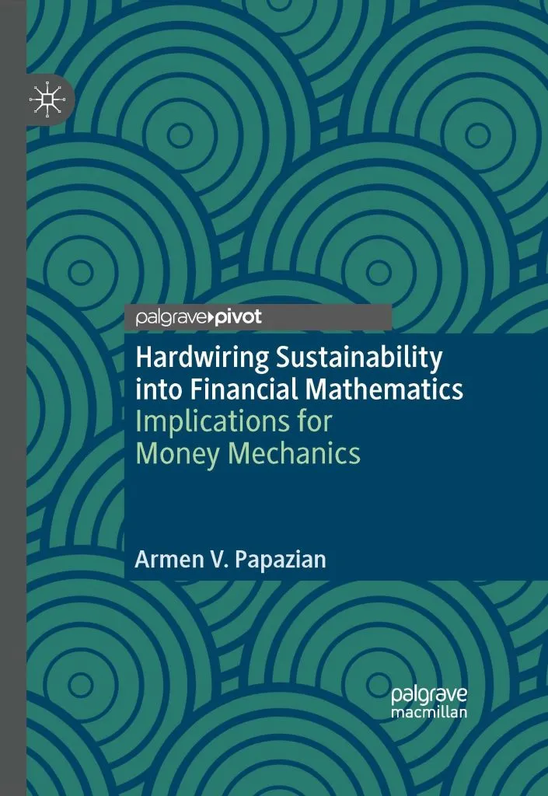
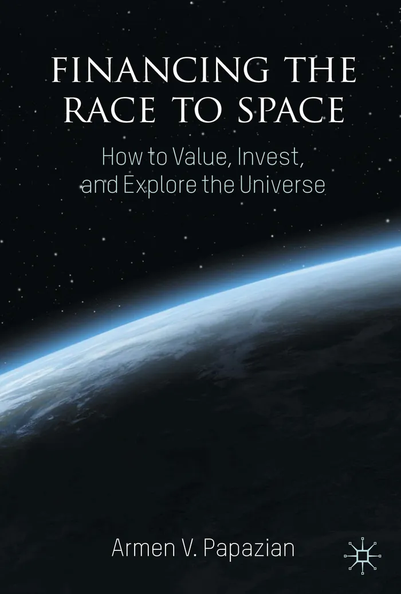
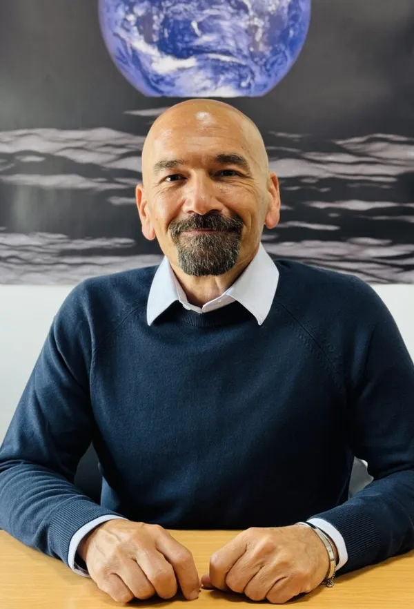

On Earth
We have littered every environment we have touched, bringing us to the edge of ecological catastrophe.
Not-for-profit · Advocacy · Education
Measuring impact from the
The equations that create, allocate and deploy money shape our footprint. We are rewriting them so that every dollar accounts for its impact on space.
01 The problem
Our financial value framework, mathematics and monetary architecture are built in “risktime” — around risk and calendar time, with no context parameters. Our physical context, and our responsibility for impact on it, simply isn’t there.

We have littered every environment we have touched, bringing us to the edge of ecological catastrophe.
The same omission leaves us unable to invest and expand our reach into outer space — an evolutionary bottleneck.
02 What we mean by space
It is our physical context of matter — from subatomic to interstellar space, and every layer in between and beyond. Impact must be measured across all of it; anything less creates new blind spots.
Select a layer
Subatomic space, the nano world, the micro world — and the human body itself.
Upper and lower mantle, outer core, inner core, innermost inner core.
Hydrosphere, oceanic crust and continental crust — on land, in and on water.
Troposphere to exosphere, including Low, Medium and Geostationary Earth Orbits.
Cislunar space, the Moon, Mars, the Solar System and interstellar space.
The digital layer we now build and inhabit — a space with its own footprint.
Space layers as defined in Financing the Race to Space (Papazian, 2024).
03 The solution
A principle that sets the bottom threshold of investability: positive returns, without negative space impact.
Built for the mortal, risk-averse investor.
Value discounted along calendar time.
The space impact of cash flows becomes integral to their value.
Equal stakeholders
Impact, defined
Beyond ESG
Adds Technology and Money — because a sustainability debate that avoids the logic of money creation stops short.

04 Money mechanics
Today’s debt-based money monetises risk and calendar time. Space value makes it possible to monetise space — creating new instruments to fund the transition on Earth and our expansion beyond it.
05 The trilogy
By Dr Armen V. Papazian (PhD, University of Cambridge), published by Palgrave Macmillan.

2022
Rethinking Finance Beyond Risk & Time
Introduces space as an analytical dimension — a theoretical bridge between core finance and sustainable finance.

2023
Implications for Money Mechanics
Exposes a spaceless framework and offers new equations of value and return, with their implications for money creation.

2024
How to Value, Invest, and Explore the Universe
The monetary and financial foundations needed to fund exploration, development and settlement of new habitats.
“A masterful work that challenges and inspires.”
“A thought provoking and fresh way to look at finance and economics.”
“This should be compulsory reading for all students of finance and investing.”
“A finance handbook for the future.”
“A fundamental contribution that is both profound and practical.”
“An inspiring and ground-breaking blueprint for the future of space exploration.”
“Much needed conceptual rigour… a new paradigm shift in financial valuation.”
“The concept of the space impact of investments [is] even more compelling.”
“Investors… stand to reap the responsible rewards.”
“Enthralling and captivating.”
06 Work with us
Our most popular lecture. Transforms how teams understand sustainable finance, standards and reporting.
A technical workshop with the tools for in-depth space value analysis.
Keynotes · Seminars · One- or two-day courses · In person or online
Framework development — tailored institutional or country-level sustainable finance frameworks, aligned with global standards and built for local relevance.
Space impact assessment — far beyond emissions, across every layer of space, for your:
Internal and external research on the entity.
Map the value chain across all layers.
Planetary, human and economic.
Project impact-adjusted returns.
07 Moments
Bank of England Future Forum. Governor Mark Carney brings Armen into the debate on the future of money.
King’s College Cambridge. First book launched at Keynes’ Lecture Theatre with Cambridge Judge Business School.
Chartered Accountants’ Hall, London. Second launch, hosted by the ICAEW and opened by the Lord Mayor of London.
Fireside chat with Dr Gillian Tett OBE, Provost of King’s College Cambridge.
Global lectures for the Space Renaissance Academy and IIT Kanpur.
Keynote at IIPS-CoMET 2025, Devi Ahilya University, Indore.
08 The Foundation
A company limited by guarantee and an advocacy platform. We distribute no profits; all revenue funds the work of hardwiring sustainability into finance.
Leaders and investors who understand how their financial mathematics shapes the planet can hardwire better outcomes.
Organisations that report the full impact of their value chains on every layer of space can change trajectory.

Founder & Director
Financial economist, author of the trilogy and originator of the Space Value of Money.
LinkedInFounder & Director
Former FTSE board director, chairman of Outcome Path, investor in environmental and health technology.
LinkedInExecutive Assistant
Keeps the Foundation’s programmes, events and partners running smoothly.
EmailPartner, affiliate, member or client — we welcome individuals and organisations, public and private, who want finance that accounts for space.